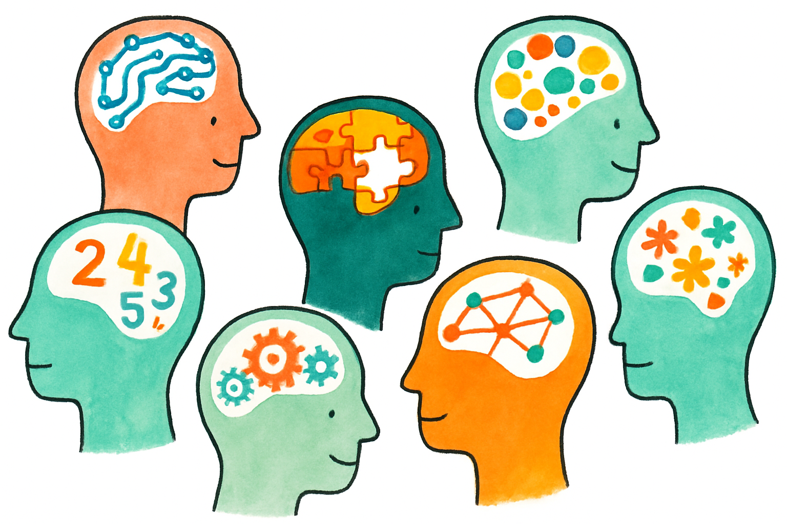

What Is Mental Health?
Mental health isn’t just the absence of illness — it’s how you think, feel, and connect with others. It includes your emotions, coping skills, and sense of purpose. Just like physical health, your mental health can change over time depending on stress, sleep, relationships, food habits, and environment.
Mental health challenges can affect anyone — and many start between the ages of 15 and 25, and even earlier. Knowing the basics can help you recognize what’s happening and find the right kind of help early.
Most common conditions:
- Anxiety: When worry becomes overwhelming or constant.
- Depression: Feeling persistently sad, empty, or numb.
- ADHD: Difficulty focusing, staying organized, or managing impulses.
- Eating Disorders: When food, body image, or exercise become sources of stress.
- Substance Use & Mental Health: Understanding how they can interact. Learn More
Everyone has ups and downs, but sometimes changes in mood, motivation, or focus can signal it’s time to talk to someone. Pay attention to patterns that last for a couple of weeks or start affecting school, work, or friendships.
You might notice:
- - Feeling sad, empty, or anxious most of the time.
- - Trouble sleeping or sleeping too much.
- - Losing interest in things you used to enjoy.
- - Difficulty concentrating or remembering.
- - Feeling disconnected or hopeless.
- - Physical symptoms like headaches, stomach aches, or fatigue.
Next step: It’s okay to start small — reach out to a friend, parent, or counselor and share how you’ve been feeling. Everyone needs support sometimes — it’s a normal part of life.
Finding Help